Return To Catalogue - St Lucia 1902-1920
Note: on my website many of the
pictures can not be seen! They are of course present in the cd's;
contact me if you want to purchase the catalogue.
Before the introduction of stamps for St.Lucia, the stamps of Great Britain were used. They can be recognized by the cancel "A11". I don't posess a picture of such a cancel.
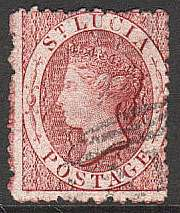
(1 p) red (1 p) black (4 p) blue (4 p) yellow (6 p) green (6 p) violet (1 Sh) orange
Value of the stamps |
|||
vc = very common c = common * = not so common ** = uncommon |
*** = very uncommon R = rare RR = very rare RRR = extremely rare |
||
| Value | Unused | Used | Remarks |
| Watermark 'Star' (1859) | |||
| (1 p) red | RR | RR | |
| (4 p) blue | RRR | RRR | |
| (6 p) green | RRR | RRR | |
| Watermark 'CC Crown', perforation 12 1/2 (1863) | |||
| (1 p) red | RR | RR | |
| (1 p) black | R | R | 1864 |
| (4 p) blue | RR | RR | |
| (4 p) yellow | RR | RR | 1864 |
| (6 p) green | RR | RR | |
| (6 p) violet | RR | RR | |
| (1 Sh) orange | RR | RR | |
| Watermark 'CC Crown', perforation 14 (1864) | |||
| (1 p) black | *** | *** | A '1d.' surcharge is bogus(?) |
| (4 p) yellow | RR | RR | |
| (6 p) violet | RR | RR | |
| (1 Sh) orange | RR | RR | |
Surcharged
'Half Penny' on green (non issued) 'HALFPENNY' on green 'ONE PENNY' (in red) on black '2 1/2 PENCE' on red 'FOUR PENCE' on yellow 'Six Pence' on blue (non issued) 'SIX PENCE' on violet 'ONE SHILLING' on orange
Value of the stamps |
|||
vc = very common c = common * = not so common ** = uncommon |
*** = very uncommon R = rare RR = very rare RRR = extremely rare |
||
| Value | Unused | Used | Remarks |
| 'Halfpenny' on green | RR | - | 1863 Non issued, watermark 'CC Crown', perforation 12 1/2 |
| 'HALFPENNY' on green | RR | RR | 1881 Watermark 'CC Crown', perforation 12 1/2 |
| 'HALFPENNY' on green | R | R | 1883? Watermark 'CA Crown', perforation 14 |
| 'ONE PENNY' on black | R | R | 1883? Watermark 'CA Crown', perforation 14 |
| '2 1/2 PENCE' on red | RR | RR | 1881 watermark 'CC Crown', perforation 12 1/2 |
| 'FOUR PENCE' on yellow | RR | RR | 1883? Watermark 'CA Crown', perforation 14 |
| 'FOUR PENCE' on yellow | RRR | RR | 1883? Watermark 'CA Crown', perforation 12 |
| 'Six pence' on blue | RRR | - | 1863 Non issued, watermark 'CC Crown', perforation 12 1/2. |
| 'SIX PENCE' on violet | RR | RR | 1883? Watermark 'CA Crown', perforation 14 |
| 'ONE SHILLING' on orange | RRR | RRR | 1883? Watermark 'CA Crown', perforation 14 |
In 1881 the first fiscal stamps were issued, they were created by surcharging the postage stamps with "STAMP" and the value in capital letters. The following values exist: 1 p black (red overprint), 4 p yellow, 6 p lilac and 1 Sh orange.

(I've been told that the 4 p fiscal stamp was used as a postage
stamp)
Also some stamps were overprinted "Stamp" and the value in small letters (see example above), the values 1/2 p green, 1 p black (red overprint), 4 p yellow, 6 p lilac and 1 Sh orange were overprinted in this way.
Fiscal stamps, overprinted "REVENUE" (1882):
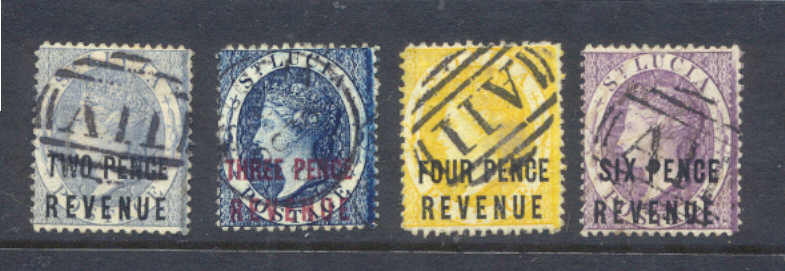
The values 1 p black, 2 p blue, 3 p blue, 4 p yellow, 6 p lilac and 1 Sh orange exist.
Fiscal stamps, overprinted "Revenue" (1883)
The values 1/2 p green, 1 p black (two sizes of the word "Revenue", also with "." behind "Revenue") and 4 p yellow exist.
Fiscal stamps are often used as postage stamps in St.Lucia in this period.
The book Album Weeds (written in the early 20th century) already notes 7 different kinds of forgeries.
Examples:
I presume the above forgeries are made by Spiro. These forgeries are lithographed, have no watermark and are perforated 13. The mouth is quite different from the genuine stamps (the Queen looks quite sour). Maybe the easiest way to check these forgeries are the cancels: 1) an outlined oval, containing 6 parallel bars, or 2) eight parallel bars very close together, or 3) oval with bars at top and bottom, two curved lines at each side, something like the genuine cancel, but with a blank center instead of 'A11', etc. This forgery is described in Album Weeds as the first forgery (it is probably also the most common forgery). The 'S' of 'ST.' is placed too high.
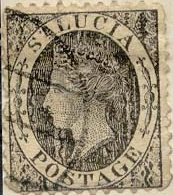
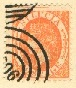
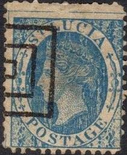
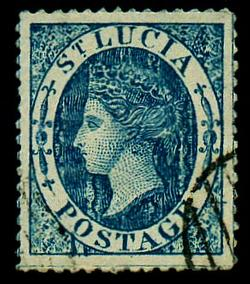 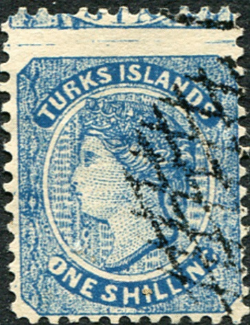
It appears that this 1 Sh Turks Islands forgery was printed
together with a St.Lucia stamp (a small piece of it is still
visible on top).
(This stamp is perforated 11, so it is probably a forgery, also
note the "FRANCO" cancel)
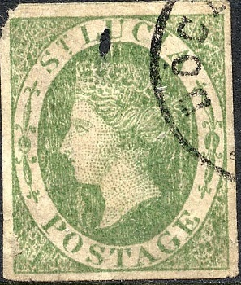
This forgery has a "VF" cancel.
Another forgery:
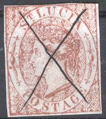
Note the 'grid cancel' on the first forgery above. The "S" of "ST" is placed too low, the eyes are white and the curl a the back of the head is hanging too low. I think this must be the second or third forgery described in Album Weeds.
Worn plate of the same forgery type?
The same forgery(?) with a 'pimple' on the Queen's face and neck.
Fournier forgery.
Oneglia forgeries:
(Another forgery, the overprint "ONE SHILLING" is much
broader, Oneglia forgery)
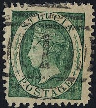 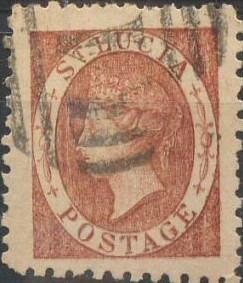 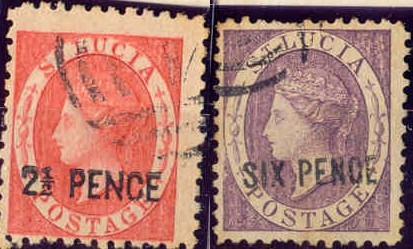
(Oneglia forgeries?)
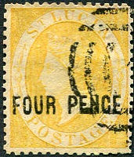
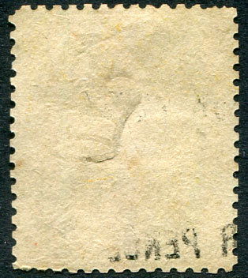
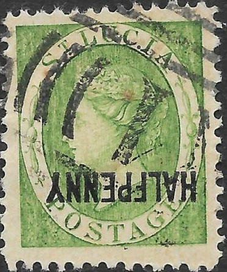
They even exist with inverted overprints, here with inverted
"HALFPENNY". Also an error "ONE PENNY" red on
black.
I know that Oneglia (Panelli?) made engraved forgeries of these stamps with oil-impressed watermarks of at least the following unsurcharged 1860 issues: 1 p red, 4 p blue, 1 Sh orange. I also know he made forgeries of the surcharged stamps of at least the values 1 p black and 1 Sh orange. I suspect the above forgeries to be Oneglia forgeries. Album Weeds describes it as its seventh forgery; the outline of the back of the neck is much too thin in this forgery. The above forgeries are often cancelled with a numeral '1' cancel.
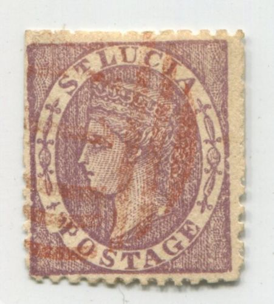
And yet another set of primitive forgeries with very thick
lettering; note for example the right hand side of the 'A' of
'POSTAGE'. There is also a break in the outer shape of the
ellipse just before the 'P' of 'POSTAGE'. The last one with '2
1/2 PENCE' does not have this break. A similar image appears in
the catalogue of Placido Ramon de Torres
"Album Illustrado para Sellos de Correo" of 1879
(information passed to me thanks to Gerhard Lang, 2016) on page
218.
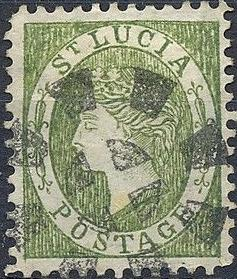
Forgery with strange face and slanting 'T' in 'POSTAGE'.
Some very primitive forgeries (possibly produced in India), all are imperforate:
Click here for more of such forgeries made in India
Another primitive forgery with a smiling Queen.
Genuine stamp with the fiscal pencancel removed (still faintly
visible) and a forged postal cancel 'A09' applied by the forger Fournier. Next to it the forged 'A09'
cancel as found in 'The Fournier Album of Philatelic Forgeries'.
1/2 p green 1 p red 1 p lilac 2 p blue and orange 2 1/2 p blue 3 p lilac and green 4 p brown 6 p lilac 6 p lilac and blue 1 Sh brown 1 Sh lilac and red 5 Sh lilac and orange 10 Sh lilac and black
For the specialist: these stamps have watermark 'CA Crown' (as shown in the 5 Sh stamp) and perforation 14.
Value of the stamps |
|||
vc = very common c = common * = not so common ** = uncommon |
*** = very uncommon R = rare RR = very rare RRR = extremely rare |
||
| Value | Unused | Used | Remarks |
| 1/2 p | * | * | |
| 1 p red | R | R | |
| 1 p lilac | * | * | |
| 2 p | *** | *** | |
| 2 1/2 p | *** | ** | |
| 3 p | *** | *** | |
| 4 p | *** | *** | |
| 6 p lilac | RR | RR | |
| 6 p lilac and blue | *** | *** | |
| 1 Sh brown | RRR | RR | |
| 1 Sh lilac and red | *** | *** | |
| 5 Sh | RR | RR | |
| 10 Sh | RR | RR | |
Surcharged
'1/2d' on 6 p lilac and blue (bisected) 'ONE HALF PENNY' on 3 p lilac and green 'ONE PENNY' on 4 p brown
Value of the stamps |
|||
vc = very common c = common * = not so common ** = uncommon |
*** = very uncommon R = rare RR = very rare RRR = extremely rare |
||
| Value | Unused | Used | Remarks |
| 1/2 p on half of 6 p | RR | RR | |
| 1/2 p on 3 p | RR | RR | |
| 1 p on 4 p | *** | *** | I've seen a double overprint |
Typical cancel:
Stamp with fiscal cancel:
(Fiscally used stamp)
Fiscal stamps issued in 1884 with overprint "REVENUE" exist in the values 1 p grey and 1 p lilac, furthermore with overprint 'Revenue' in the value 1 p red.
(Fiscal stamps with overprint "REVENUE", I've been told
that the lilac stamp was used for postal purposes)
Forgeries: I know that Sperati made a forgery of the 1 Sh brown stamp, by using a Ceylon 5 c value with the correct CA watermark. He then removed the Ceylon image and reprinted the St.Lucia 1 Sh design on it. This is a very dangerous forgery. Sperati also made a forgery of a 6 p lilac value. I find the distinguishing characteristics of the BPA book not very useful for this particular forgery.... The only characteristic that I find useful is that the 'P' of 'PENNY' has a small dent at the top.
Sperati forged 6 p minisheet 'proof'
Sperati forged 'SIX PENCE proof'
Two 6 p Sperati forgeries. The cancels were also forged by
Sperati, note the breaks and defects in the cancels, such as the
broken 'A' in the second image. Sperati also forged a 'ST.LUCIA C
AF 10 85' single circle cancel.
A forgery of the 5 Sh stamp, the words 'FIVE SHILLINGS' are too
long, this forgery is probably made from a cheaper genuine stamp
by erasing the country name and value and reprinting it in the
colour of the 5 Sh.
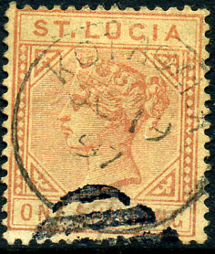 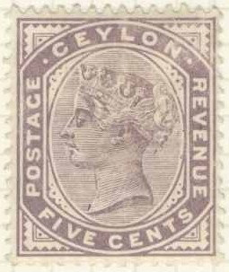
Smeets forgery of the 1 Sh value, made
by bleaching out a 5 c Ceylon stamp (shown to the right) and
reprinting the St.Lucia design. The Kotagala (Ceylon) cancel is
still present.
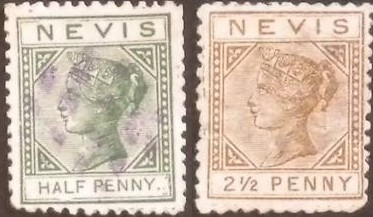
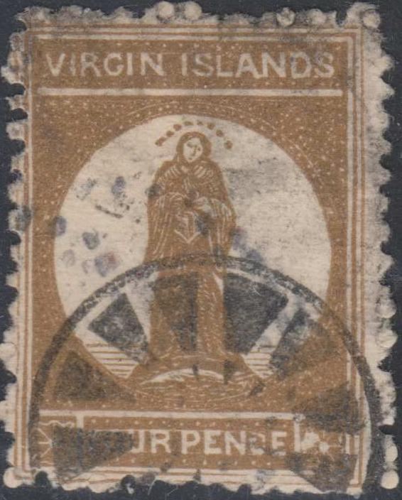
Not the strange cancel that also appears on this Virgin Island
forgery.
For stamps of St Lucia, issued from 1902 to 1920, click here.

{kind=link}
{kind=link}
{kind=link}
{kind=link}
{kind=link}
{kind=link}
{kind=link}
{kind=link}
{kind=link}
{kind=link}
{kind=link}
{kind=link}
{kind=link}
{kind=link}
{kind=link}
{kind=link}
{kind=link}
{kind=link}